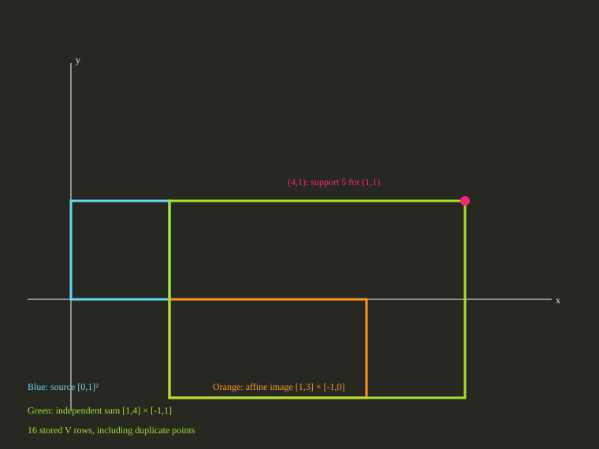

This standalone example uses the saved measured fixture. Frozen source commit 64ace8666a0e6ca1fc6ba5a5d44d6cd0dd1df33d; fixture hash bcc7258528adaaa9d05ce65d5b1e74bd3c440bf673ccbbd8ae71044a05289b21. The plot labels coordinates x and y; the public source handle has no coordinate-name metadata because a general affine map drops those names.
Native V source ID geo08-square: vertices (0,0), (1,0), (0,1), (1,1); no rays. Apply affine map [[2,0],[0,1]] and offset (1,-1), then independently add the original square. Query support in direction (1,1) through csl.geometry.lazy-support, and explicitly materialize native V with vertex cap 16 and ray cap 0. All requests use numerical assurance and an equivalent mathematical relation.

The affine image is [1,3] × [-1,0], so the independent sum is [1,4] × [-1,1]. Its support in direction (1,1) is 4+1=5 at (4,1). The driver checks that answer, evidence scope, growth 8→16, and each of the 16 returned rows on every call.
| Batches | Measured calls | Median | Range | Failures |
|---|---|---|---|---|
| 7 | 700 | 3592100 ns | 3576300–3627900 ns | 0 |
One excluded 100-call warmup preceded seven measured 100-call batches. Each steady-clock interval includes expression construction, support, explicit materialization, fresh workspaces and literal result checks. Source and selected provider registration, CSV writing, process launch and rendering are excluded. One worker ran the deterministic fixture; native solver threads and random seed are not applicable. The driver compares the finite binary64 support, evidence, growth and all 16 V rows with literal exact equality and no tolerance. Internal counters are unavailable. These single-route observations establish no competitor, speedup, source-mapped limiter or scalability conclusion.
Host DESKTOP-S9O3F6S: Intel64 Family 6 Model 151 Stepping 5, GenuineIntel; Windows-11-10.0.22631-SP0. The build receipt, configure log, build log, CMake cache and compiler receipt describe the Release configuration. Public receipts replace local source and build directory paths with placeholders. HiGHS and Qhull were disabled.
Mathematical equivalence and these stored binary64 outputs do not establish validated rounding or an inclusion enclosure. A finite direction sample is not a complete set. The raw record contains complete inputs, source and executable hashes, all trial rows and timing scope.
cmake -S . -B build/geo08-example -DBUILD_TESTING=OFF -DCSL_ENABLE_HIGHS=OFF -DCSL_ENABLE_QHULL=OFF -DCSL_BUILD_GEO08_REPORT=ON cmake --build build/geo08-example --config Release --target csl_geo08_lazy_report build/geo08-example/Release/csl_geo08_lazy_report.exe smokeReport ID geo08-lazy-6dbdd6b2f9235837; only the declared planar fixture is covered.